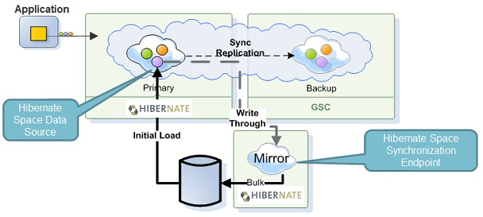

SpaceDataSource and SpaceSynchronizationEndpoint classes. The implementation allows a custom objects persistency using Hibernate mappings.

There are two available implementations.
DefaultHibernateSpaceDataSource and Default based on Hibernate Session.
StatelessHibernateSpaceDataSource and Stateless based on Hibernate StatelessSession. This implementation is faster than the Default Hibernate Space Persistency Implementation, but it does not have first level cache, as well as does not perform any cascading operations (both in read operations as well as dirty operations).
The Hibernate Space Persistency Implementation is used both with the Synchronous and the Asynchronous Persistency modes.
See below example for Hibernate Space Persistency that is configured having a Space connected to a central data source using Hibernate configuration files decorating the Space Classes:
<bean id="dataSource" class="org.apache.commons.dbcp.BasicDataSource" destroy-method="close">
<property name="driverClassName" value="org.hsqldb.jdbcDriver"/>
<property name="url" value="jdbc:hsqldb:hsql://localhost:9001"/>
<property name="username" value="sa"/>
<property name="password" value=""/>
</bean>
<bean id="sessionFactory" class="org.springframework.orm.hibernate<bean id="dataSource" class="org.apache.commons.dbcp.BasicDataSource" destroy-method="close">
<property name="driverClassName" value="org.hsqldb.jdbcDriver"/>
<property name="url" value="jdbc:hsqldb:hsql://localhost:9001"/>
<property name="username" value="sa"/>
<property name="password" value=""/>
</bean>
<bean id="sessionFactory" class="org.springframework.orm.hibernateWhen using annotations to decorate the Space Classes the sessionFactory would have the following:
<bean id="sessionFactory" class="org.springframework.orm.hibernate4.LocalSessionFactoryBean">
<property name="dataSource" ref="dataSource"/>
<property name="annotatedClasses">
<list>
<value>com.mycompany.app.common.Data</value>
</list>
</property>
<property name="hibernateProperties">
<props>
....
</props>
</property>
</bean>
The external-data-source element within the persistent schema allows for further configuration of the external data source. The values can be injected using the properties tag within the Space tag using the "xpath" notation.
Here is an example for a Space Domain class with its Hibernate decorations. See the @SpaceId and the @SpaceRouting used to include the Space Class meta Data.
Make sure your POJO @SpaceId is defined on the same property as the Hibernate @Id. This is necessary for proper object mapping.
See the POJO Metadata for details about these decorations.
package com.mycompany.app.common;
import com.gigaspaces.annotation.pojo.SpaceClass;
import com.gigaspaces.annotation.pojo.SpaceId;
import com.gigaspaces.annotation.pojo.SpaceRouting;
import javax.persistence.Entity;
import javax.persistence.Table;
import javax.persistence.Id;
@Entity
@Table(name="DATA")
@SpaceClass
public class Data {
@Id
private String id;
private Long type;
// need no arg constr
public Data() {}
@SpaceId(autoGenerate=false)
public String getId() {return id;}
public void setId(String id) {this.id = id;}
@SpaceRouting
public Long getType() {return type;}
public void setType(Long type) {this.type = type;}
...
}
}
When mapping a Collection Data types or any other variable size field make sure the relevant database table column has a sufficient size that can accommodate the largest collection/variable size field you may have within your space object.
When fetching collections, you must use the @Fetch(FetchMode.SELECT) annotation for the collection field. This is a result of hibernate bug HHH-1751. The default @Fetch(FetchMode.JOIN) mode will not fetch all members. This will handle also duplicate entry creation when initial-load is being called. Irrelevant since
When mapping a Collection Data types or any other variable size field make sure the relevant database table column has a sufficient size that can accommodate the largest collection/variable size field you may have within your space object.
The Hibernate Space Persistency implementation includes the following properties:
| Property | Description | Default |
|---|---|---|
| fetchSize | Sets the fetch size that will be used when working with scrollable results. | 100 |
| initialLoadChunkSize | By default, the initial load process will chunk large tables and will iterate over the table (entity) per chunk (concurrently). This setting allows to control the chunk size to split the table by. Batching can be disabled by setting -1 The initialLoadChunkSize property allows you to have multiple threads loading data from the same table into the space - each thread loading different rows from the same table. Having the initialLoadChunkSize as 100,000 will break a 1 million rows table into ten chunks. All the chunks, from all the tables, are processes by the amount of initialLoadThreadPoolSize configured. |
100,000 |
| initialLoadEntries | Sets a list of entries that will be used to perform the ManagedDataSource.initialLoad() operation. |
By default, will try and build a sensible list based on Hibernate meta data. |
| managedEntries | Sets all the entries this Hibernate data source will work with. By default, will use Hibernate meta data API in order to get the list of all the given entities it handles. This list is used to filter out entities when performing all data source operations except for the ManagedDataSource.initialLoad() operation. Usually, there is no need to explicitly set this. |
|
| sessionFactory | Injects the Hibernate SessionFactory to be used with this data source. | |
| initialLoadThreadPoolSize | The initial load operation uses the ConcurrentMultiDataIterator. This property allows to control the thread pool size of the concurrent multi data iterator.Note, this usually will map one to one to the number of open connections / cursors against the database. |
10 |
| performOrderById | When performing initial load, this flag indicates if the generated query will order to results by the id. | true (as it most times results in better initial load performance). |
| useScrollableResultSet | Controls if scrollable resultsets will be used with inital load operation. | true |
| useMerge | If set to true, will use Hibernate merge to perform the create/update, and will merge before calling delete. This might be required for complex mappings (depends on Hibernate) at the expense of slower performance. Available only for the Default Hibernate Space Persistency Implementation |
false |
| deleteById | Since 7.1. If set to true, will delete objects by their id, otherwise the object itself will be used in delete. This is necessary for objects with not-nullable fields. Available only for the Default Hibernate Space Persistency Implementation |
true |
| augmentInitialLoadEntries | Since 10.0. Feature flag for intelligent partition-specific initial load of entries. Read here for more details. | true |
| initialLoadQueryScanningBasePackages | Since 10.0. A list of base packages to be scanned for special initial load query methods. Read here for more details. |
Tuning the fetchSize, initialLoadChunkSize, initialLoadThreadPoolSize and performOrderById will allow you to control the initial load time. In addition, the StatelessHibernateSpaceDataSource should give you better performance on startup.
See example below:
<bean id="hibernateSpaceDataSource" class="org.openspaces.persistency.hibernate.DefaultHibernateSpaceDataSourceFactoryBean">
<property name="sessionFactory" ref="sessionFactory"/>
<property name="fetchSize" value="100"/>
<property name="initialLoadChunkSize" value="2000"/>
<property name="initialLoadEntries" value="MyClass1,MyClass2"/>
<property name="managedEntries" value="MyClass1,MyClass2"/>
<property name="initialLoadThreadPoolSize" value="10"/>
<property name="performOrderById" value="true"/>
<property name="useScrollableResultSet" value="true"/>
<property name="useMerge" value="true"/>
<property name="augmentInitialLoadEntries" value="true"/>
<property name="initialLoadQueryScanningBasePackages">
<list>
<value>com.example.domain</value>
</list>
</property>
</bean>